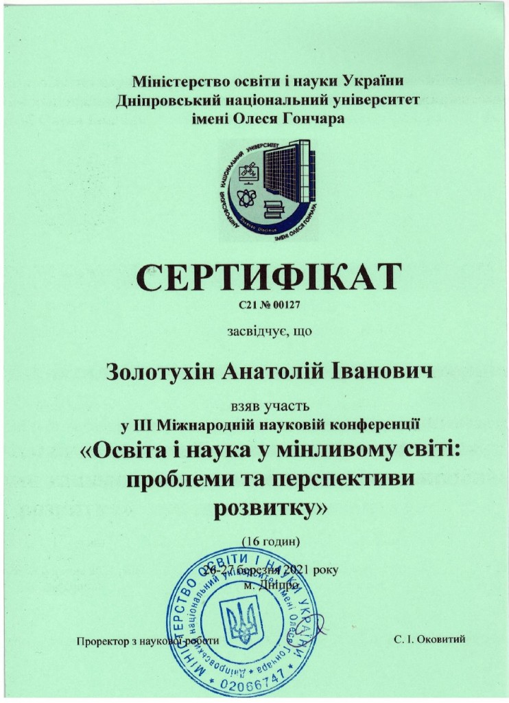
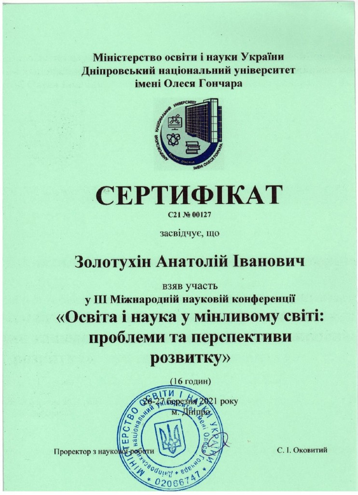

{kind=link}
У 2021 році за дивовижним збігом обставин ми маємо відмічати доволі багато ювілеїв, пов’язаних зі створенням та знахідкою золотої скіфської пекторалі: 85 р. тому, 4 лютого 1936 р., в с. Миколаївка, Веселинівського району, Миколаївської області, народився археолог і поет Б.М. Мозолевський, який 50 р. тому, 21 червня 1971 р., в кургані Товста Могила знайшов золоту скіфську пектораль. 3 вересня 2021 р. виповнюється 2420 р. з дня створення золотої скіфської пекторалі в Ольвії-2 (с. Порутине) в домі Гомера його нащадком, скіфським царем Трофімом Мідасом (8.10.470 -30. 10.369)! А 3 вересня 2021 р. виповниться 2450 років з дня народження Атея (03.09.429-8.10.339), сина Трофіма Мідаса, 30 р. якому батько присвятив створення пекторалі. [4c, 4d]
20 р. тому, в перших публікаціях, присвяченим скіфській пекторалі, в книгах «Гомер. Имманентная биография», 2001 р. [1], та «Экзампей», 2005 р.[2], виповнено ототожнення портрета Гомера на пекторалі з портретом на монеті невідомого автора (Зараз з’ясовано, що її виготовив Гефест до 63 р. Гомера [4f]). Портрет Атея був ототожнений М.В. Русяєвою в 1992 р. із зображенням на монеті Емінака. [4e] У 2018 р. в книжці «Україна – душа і серце Європи!» та в статті [3, 4a], був наданий ширший семантико-семіотичний аналіз змісту сюжету і зроблено два припущення. Перше про те, що Атей міг бути нащадком Гомера в 7-му коліні. Друге про те, що в центрі пекторалі розміщено золоте руно, 300 р. якого могла бути присвячена й пектораль 3 вересня 346 р. до н.е. Ця дата була винесена на обкладинку книжки. В науковому плані це промах, а не помилка, бо в розшифрованих на той час 1500 лапідарних написах, не було згадки ні про Трофіма Мідаса, ні про Атея. Зараз за 10 років начорно завершена розшифровка 2270 лапідарних написів на твердих носіях, знайдених не в Греції, а в Північному Причорномор’ї, в яких вже виявлено 88 автографів Трофіма Мідаса, 34 – його брата Секста Емпірика та 42 – Атея.
Встановлено родовід від Гомера до Атея (роки до н.е.): Гомер (14.09. 657-28.07.581) – Анахарсіс (8.09.620-11.09.513) – Никон (3.09.555-8.10.475) – Аполлонід Нікійський (8.09.511-28.07.411) – Трофім Мідас – Атей. Як бачимо, Атей був в 5-му коліні нащадком Гомера, а не в 7-му, як раніше мною передбачалося. Це сталося тому, що середній вік життя в цьому рядку імен керівників Ольвії-2 дорівнює 92 р. і для її кіммерійських царів з роду Таргітая спостерігається таке, майже щасливе життя, до 600 р. існування Ольвії-2. Олігарх Арістей Проконнеській (11.02.734-25.08.640), на гроші якого будувалося нове місто, не дарма просив Клеопатру й Гомера зберегти для нового міста стару назву Ольвії-1 (Миколаїв), де народилися його батьки Таргітай і Сфено, він, Гомер та інші нащадки їх роду. [3]
Треба зауважити, що у всіх Причорноморських містах Скіфії панувала демократія, містами керувала рада з 7-9 родовитих членів, обраних громадянами, та голова її. Зрозуміло, що в сім’ї не без виродка, коли до влади доривалися такі скіфи-вбивці, як Пан (4.04.674-13.05.611), чи Савлій (23.05.608-8. 10.551), в містах якими вони керували, тимчасово встановлювалася тиранія. Анахарсіс, наприклад, керував певний час Ольвією-2 і Херсонесом, який він заснував 4 жовтня 575 р. до н.е. Після його смерті керівництво в Херсонесі перейшло до його доньки Клеобуліни-2 (8.10.565- 8.10. 485), а після її вбивства в Херсонесі в 80 р., керівником було обрано Аполлоніда Нікійського, батька Трофіма Мідаса. Тут ніколи не було рабства, яке панувало в Греції. Ось, що писав Аполонід Нікійський 8 вересня 427 р. до н.е. в прихованих віршах наприкінці 9-ї книги «Історії» Геродота, яку він завершував в місті Нікії (о. Березань): «Краще бути вільним сіячем в Скіфії, ніж рабом в Афінах». Через те в кіммерійському роду Таргітая органічно народилося християнство як супровід розвитку античності.
Ось молитва з майбутнього, яка створена Аполлонідом Нікійським 8 вересня 426 р. до н.е. ще за 422 р. (!) до появи Ісуса Христа, який був нащадком Аполлоніда, Трофіма Мідаса й Атея. Камінь з написом цієї молитви, знайдений на березі моря в 1868 р. біля Гермонасси (Тамань):
«Господи, помилуй раба Твого Аполлоніда Нікійського зі супутницею його Кірою з 7-ома нашими дітьми! Спаси моїх і пом’яни усіх разом зі Святими в 55 день, в році 350-му (8 вересня 426 р. до н.е.), та у гніві не осуди! Будь Єдиним моїм супутником, прости гріхи рабу Твоєму Аполлонідові! Хвіст комети (Галлея – А.З.) окутав Землю в 85 д. 306 р. під час народження вихованця мого Трофіма зібралися в домі Гомера й Клеопатри хвилюємося вдвох з Мідасом тут в Ольвії-2 з 3-х річним Атеєм нар. в 50 д. 347 р. Навіть, обидва він 3-х р. і я 85 р. є дітьми Виноградної ягідки нар. в 37 д. 2 р. (Клеобуліни-1, дочки Зороастра й дружини Таргітая – А.З.) з Аїду Агнців! Аполлонід Нікійський 85 р. в 55 д. 350 р.». [4c, 4d]
Згадана тут дружина Аполлоніда і мати Трофіма Мідаса Кіра відома сучасним історикам як Динамія. Встановлено, що вона була донькою 2-х з 8-ми дітей Мітридата Евпатора (3.09.571-28.07. 472) і Клеобуліни-2: 3-ї доньки Валентини (28.10.525-28.10.425) та їх 5-го сина Аргота (14.09.521- 8.10.430). Слід зауважити, що Клеобуліна-2 народила всіх синів в 61 д. народження Гомера (14 вересня), а дочок – в 105 д. (28 жовтня) народження Клеопатри. В 4-й книзі «Історії» Геродота, яку писала Клеобуліна-2, вона детально розповіла як її молодший син Аргот вбив 2-го сина Скіла (14. 09.542 – 8.10.496). Аргот був 8-ою дитиною цього подружжя (ще живим!), через те мати назвала Аргота не своїм ім’ям, а відповідно – Октамосадом.
Поки відомо, що у Трофіма Мідаса та його дружини грекині Анни-1 було двоє дітей: старша Хреста (28.10.436-28.07. 411) і молодший Атей. Хреста була золотою красунею (рудою чи блондинкою), грудастою, жартівливою улюбленицею батьків і мешканців Ольвії-2. Трофім Мідас віддав її у дружини молодшому брату Сексту Емпірику (20.08. 466-30.10.369). В одному з написів Трофім Мідас згадав як 14 р. Хреста розсмішила керівника хору ольвійського Аполлоніда закритим ртом, як ліками проти співу. Ймовірно, з того часу вони полюбили друг друга і це помітила Кіра та вирішила помститися їм обом. В 13-й д., рівно через 170 р. після загибелі Гомера, можливо ця дата вибрана нею не випадково. Як пише про це Трофім, вона взяла спеціально з собою Секста Емпірика і вони попливли на кораблі до храму Деметри (Миколаїв). З півдороги вона в ночі прискакала до Ольвії-2 застала їх у власному домі та вбила обох 28 липня 411 р. до н.е.
Доказом глибини переживань Трофімом Мідасом є те, що з 88-ми його автографів створених за довге 101 р. життя, 26 були створені за декілька місяців (!) після цієї трагедії, в якій він втратив улюблену 24 р. доньку Христу, майже 100 р. батька й морально – мати й це не може не вражати. Зі змісту цих написів видно, що він шукав відповіді на те звідки прийшла ця кара та що треба зробити, щоб захистити сина Атея?
Трофім Мідас народився рівно через 977 р. після загибелі Атлантиди й в той самий судний для їх роду 85 д. (8 жовтня) її загибелі та під знаком приходу комети Галлея. Треба зауважити, що античність і християнство народилися як спокута гріхів її нащадками, за які була наказана Атлантида. Гомер під псевдонімом Платона в «Діалогах» недарма писав, що Атлантида була покарана за порушення заповідей Божих, написаних Посейдоном в Атлантиді на аріхальковій дошці, зміст яких мало чим відрізнявся від тих 10-ти заповідей, даних Мойсею через 1200 р. [3, 4c] Тому 85-й день загибелі Атлантиди в кіммерійській хронології став для багатьох з кіммерійців-атлантів судним днем і підсвідомою програмою їх життя та смерті. [4g]
Про існування 4-х, 6 та 12 р. циклів в житті та про явлення комети (Галлея) через 75 р. Арістею, Гомеру, Клеопатрі й Анахарсісові вже було відомо і вони про це писали у лапідарних написах, як про кару Божу. Це могло наштовхнути Трофіма Мідаса на створення пекторалі у вигляді кругового витвору з зображенням циклічної історії їх кіммерійсько-атлантичного роду, який тут позначено золотим руном. Ідея створити цей символ роду прийшла до Арістея, коли батько Гомера, Лік, мав прийняти владу в трьох містах Аїду (Миколаїв), збудованих його батьком Таргітаєм одночасно із заснуванням Риму. Олігарх дав гроші та доручив зробити золоте руно своєму синові Гефесту, який виконав його 3 вересня 646 р. до н.е. Саме в цей день у Трофіма Мідаса через 217 р. народився Атей. Цей збіг обставин міг скласти ідею верхнього ярусу композиції, який зображає реальне життя. Нижній ярус з грифонами, описані Арістеєм у своїх творах, присвячений Атлантиді, що загинула 8 жовтня 1447 р. до н.е. А середній, рослинний ряд, присвячений Алібанту (археологічному пам’ятнику «Дикий Сад») який зображує 546 темних років його існування.
Виявлено, що на створення золотої скіфської пекторалі у Трофіма Мідаса витрачено майже 12 р. Причому він створив 2 однакових зразки, один з яких він подарував Атею 3 вересня 399 р. до н.е. А другий зразок виставив в Афінах на 52-х Панафінеях і був визнаний 26 липня 393 р. до н.е. Мудрецем Еллади під псевдонімом Емінака [4d, 4e]. Потім він виставив пектораль на батьківщині, в храмі Деметри біля Алібанту та Ольвії-1 (Миколаїв), де її передивилася вся Скіфія. Після цього вона експонувалася в Ольвії-2, куди постійно тисячами, як писав Анахарсіс у своїх автографах, приїздили скіфи звідусіль на різні ювілеї Арістея, Гомера, Клеопатри, Скіфа, пам’ятники яких були встановлені в театрі.
Тепер про головне, чим була для автора та чим є для нас пектораль? Напевно, для Трофіма Мідаса вона була Молитвою до Бога, на ім’я Христос (дата Його народження, в кіммерійській хронології, 163 д. 773 р., читається в перших буквах по колу імен від Гомера до Атея!) за порятунок Скіфії та душ Христи, Аполлоніда та життя Атея, бо реально лише в точному адресному звернені пектораль могла бути оберегом! Не дарма ж автор її з дружиною прожив 101 р., а Атей загинув в бою в 90 р.(!) і у 8 жовтня, в день народження батька, та через 1048 р. в день загибелі Атлантиди.
Для нас пектораль є свідоцтвом розуміння нашими предками величі свого минулого, очікуванням явлення Христа, бо цим ім’ям вони називали себе в написах з часів Арістея, закликаючи Його до себе.[3] І зараз вже встановлено родовід від Таргітая до Ісуса Христа по чоловічій лінії, куди входять Гомер, Анахарсіс, Никон, Аполлонід, Трофім Мідас і Атей. Важливе й те, що золота скіфська пектораль є матеріальним підтвердженням існування висококультурної та самостійної держави Скіфії. Причому можна вважати, що пектораль була створена на піку державного розвитку Скіфії, могутність якої була вивірена перемогами у війні з Дарієм І в 512 р. до н.е. та пізніше, під час облоги Ольвії-2 Зопіріоном в 331 р. до н.е. Цікаво, що в цих війнах ворог так і не зрозумів з ким він насправді воює.
Відомо, що держава це міста, які в Скіфії були розташовані лише в Причорномор’ї та вважалися грецькими колоніями. Начебто греки (а насправді це був Мітрідат Евпатор, це читається в його написах) домовився з Дарієм І, що вони влаштують йому переправи через Босфор і Дунай при умові, що він не буде руйнувати їх міста в Скіфії. А потім Ідантирс, онук Гомера, водив персів по Скіфії, а Мітрідат лякав відводом переправи.
Зопіріон, навпаки, прийшов завойовувати скіфське місто Ольвію-2, а «скіфи» на фортечних мурах, щоб не заснути, співали пісні на вірші Гомера, Сапфо (Клеопатри), Анакреонта (Скіфа). Через пів року облоги Зопіріон почувши, що ольвіополіти відмічають 293-й день народження міста запросив до себе сина Атея, Ксанфа Лідійського (8.09.396-8.09.293), який керував містом, і запитує в нього: хто побудував цю фортецю? А той і каже греку: Арістей Проконнеський, Сапфо, Гомер, Ахілл і Скіф. Ксанф далі пише, що той, хто не відступав, запросив коня, сів на нього й поїхав. А молодший син Атея, Гіпсігон (15.09.390-8.10.355), наздогнав його зі скіфами та вбив. Напевно, скіфи на чолі з кіммерійцем Гіпсігоном, нащадком атлантів, в день і в ночі атакували Зопіріона, захищаючи місто Ольвію-2. З цих 2-х фактів випливає найстародавніше походження назви України-Русі – «Русь» на грецькій основі: ῥῡσί-πολις – «рятівники, або охоронці міст».
Ці приклади дають нагоду розтлумачити, що виключення Атлантиди в Криму [3], яка керувалася атлантами-кіммерійцями в союзі з греками та фінікійцями, з історії Європи не дала можливості розібратися в цьому ні Дарію І, ні Зопіріону, ні науковцям сьогодні. Між тим, Трофім Мідас зафіксував на пекторалі важливий момент переходу від союзу греків з кіммерійцями (ліва частина з Гомером), а в правої – союзу греків зі скіфами. Тут показаний важливий момент відходу союзу кіммерійців з греками зі шпальт історії та входження в неї союзу греків зі скіфами. Причому найважливішим моментом є те, що це відбулося не завдяки витисненню, а завдяки перейменуванню керівної частини кіммерійців в царських скіфів в рамках одного кіммерійсько-атлантичного роду Таргітая. Перехід демонструється поступовим звуженням тла пекторалі від Гомера (лівої, греко-кіммерійської частини) в центрі до застібки й від другої застібки праворуч розширенням тла пекторалі верхньої, греко-скіфської частини, до Атею.
Річ у тім, що Клеопатра за рік до загибелі, 28 жовтня 582 р. до н.е., перейменувала кіммерійську Гілею з Аїдом в Скіфію, свого і Гомера сина Гіла в Скіфа, а кіммерійське плем’я Таргітая – в царських скіфів. [3] Це вона зробила для укріплення Скіфії як держави, бо не може країною керувати один рід, якщо вони не тирани (!) багатьма племенами скіфів, сарматів, савроматів. Але ж пам’ятаймо, що перейменування не змінює генетичний код і тому слід вважати, що Античність та Християнство створили саме кіммерійці-атланти, нащадки Зороастра, автохтонні на нашій землі. Ідантирс тому переміг, що демократично радився з усіма племенами скіфів перед війною з Дарієм І, а пізніше Ксанф Лідійський переміг Зопіріона не тому, що він, як пишуть сучасні історики, відпустив рабів на волю, а тому що в Ольвії-2 не було рабства як такого. Після видання «Одіссеї» в Афінах, афіняни докоряли Гомерові: як таке може бути, що цар Лаерт працює зі своїми слугами в саду та ще й разом з ними снідає за одним столом?!.
Гомер недарма писав в «Діалогах» Платона [3] і на Розетському камені [4c], що Аристократія є найкращим режимом правління державою і вважав Атлантиду ідеальною державою, яка від часів заснування керувалася справедливими родовитими нащадками Посейдона і Клейто. Так само Ольвія-2 та інші 13-ть міст Північного Причорномор’я, де на чолі керівників демократичних рад міст стояли філософи, тобто родовиті аристократи людського духу, нащадки з роду Таргітая і Зороастра, які дотримувалися моральних цінностей, можна вважати Аристократичним правлінням. Прямим доказом цього є створення золотої скіфської пекторалі царем Скіфії Трофімом Мідасом, який був Аристократом людського духу й філософом.
Список використаних джерел: 1. Золотухин А.И. Гомер. Имманентная биография (Тезисы). Николаев: АТОЛЛ, 2001, 88 с. 2. Золотухин А.И. Экзампей. Николаев: «Возможности Киммерии», 2005, 272 с. 3. Золотухін А.І. «Україна – душа і серце Європи», Миколаїв, 2018, 444 с. 4. Золотухін А.І. на сайті «Гомер і Атлантида»: a). Пектораль Б.М. Мозолевського, як символ скіфської культури (Семіотико- семантичний аналіз); b). «Атлантида – перша корабельна держава Європи»; c). «Розетський камінь як автограф Гомера»; d). «Хто створив золоту скіфську пектораль?»; e). «Емінак – це псевдонім автора золотої скіфської пекторалі!»; f). «Монета з прижиттєвим портретом Гомера»; g). «Цикли духовного розвитку європейської цивілізації».
 

{kind=link}